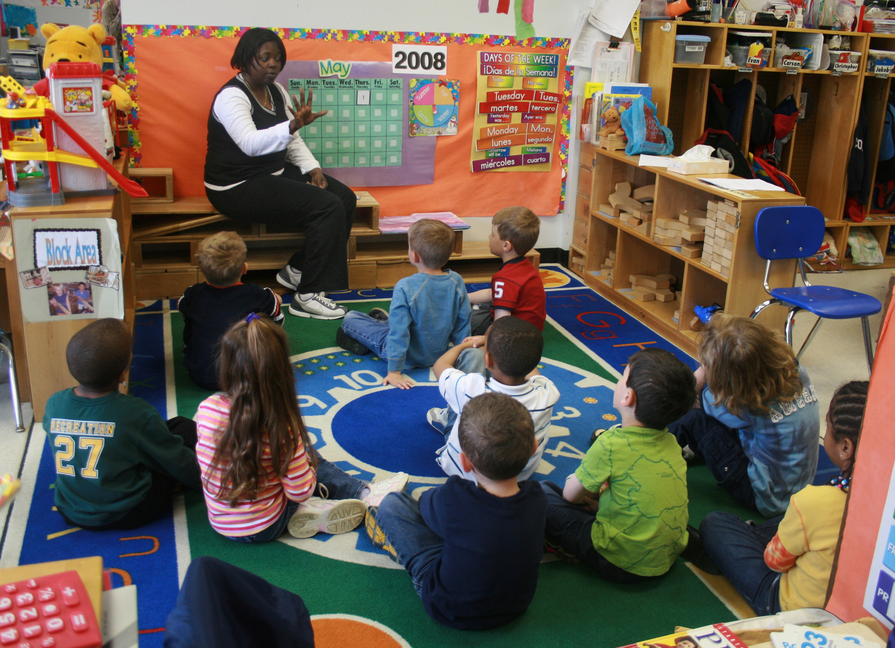

Education | Austin, TX | 2022
Leadership Intern - Bear Creek Elementary
As a volunteer at Bear Creek Elementary through AIAA, I introduced children to the fascinating world of STEM. Working alongside teachers, I helped students tackle hands-on projects from building simple circuits to science experiments and focused on making complex ideas approachable and exciting. I assisted in classroom management and lesson preparation for 5+ teachers, boosting student engagement by 15% and participation by 30%.